とくしゅう：3D プリント ケース 特集：3D プリント ケース
micro:bit と 電池ボックス を ひとつに まとめる ケースです。3D データは むりょう。使い方 と Q&A は こちら。 micro:bit と 電池ボックス を ひとつに まとめる ケースです。3D データは 無料。使い方 と Q&A は こちら。
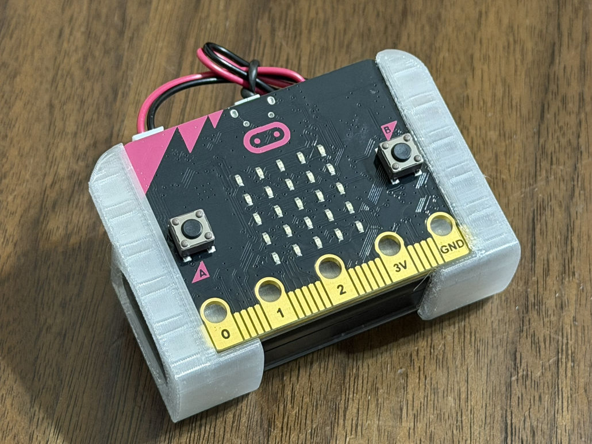
【11月】micro:bitで時間をはかって、電波でつながろう！とくしゅう
【11月】micro:bitで時間をはかって、電波でつながろう！特集
（小学3年生〜中学生）
micro:bitのタイマーやつうしんきのうを活用したプログラム集です。 micro:bitのタイマーや通信機能を活用したプログラム集です。
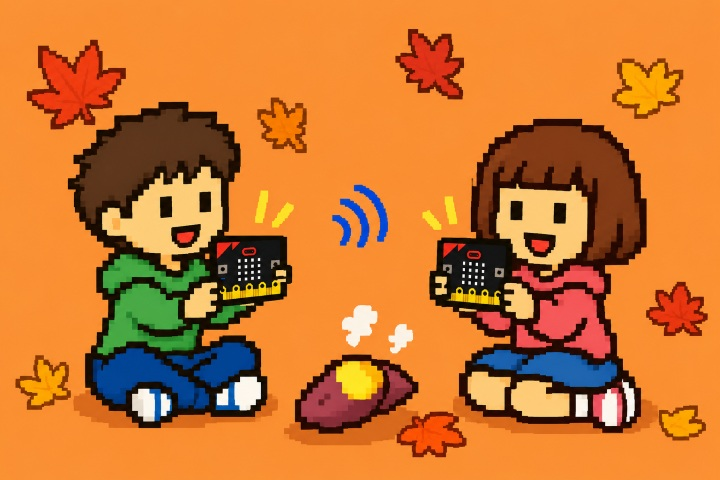
【10月】文化祭をもりあげよう！micro:bitゲーム＆ハロウィンとくしゅう
【10月】文化祭を盛り上げよう！micro:bitゲーム＆ハロウィン特集
（小学3年生〜中学生）
文化祭などで使える、色々なmicro:bitのゲームです。 文化祭などで使える、色々なmicro:bitのゲームです。
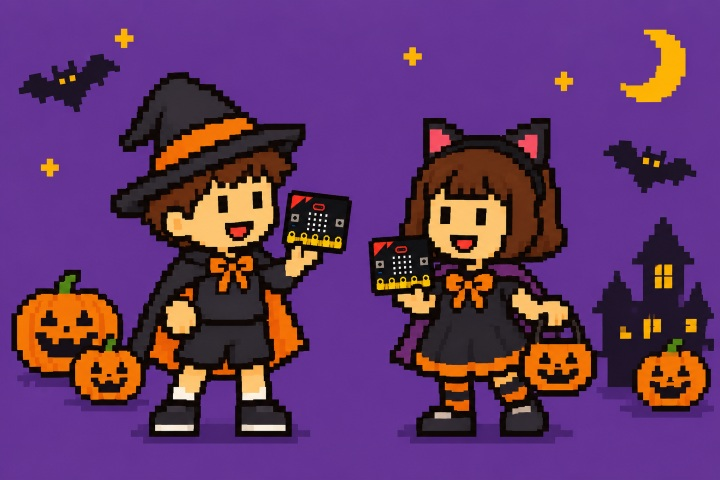
【9月】新学期にチャレンジ！micro:bitをためして動かして、しくみやへんかを見つけよう
【9月】新学期にチャレンジ！micro:bitを試して動かして、しくみや変化を見つけよう
（小学3年生〜中学生）
micro:bitの温度センサーや明るさセンサーを使って、いろいろなしぜんげんしょうを調べてみましょう。 micro:bitの温度センサーや明るさセンサーを使って、色々な自然現象を調べてみましょう。
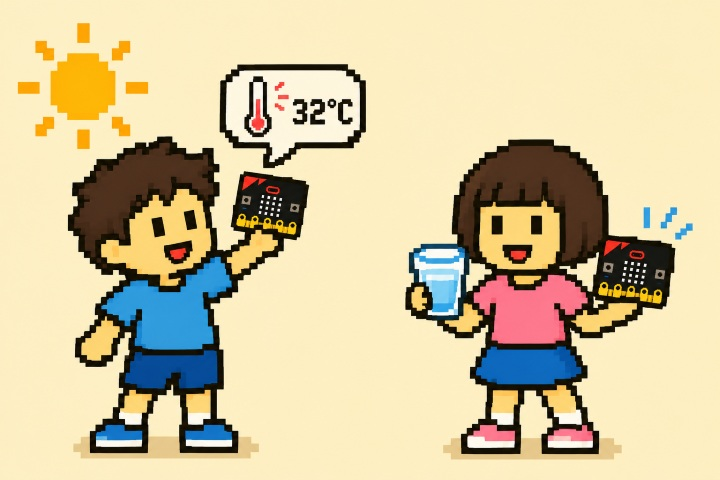
【8月】夏休みにやってみよう！micro:bit自由研究＆ゲームとくしゅう
【8月】夏休みにやってみよう！micro:bit自由研究＆ゲーム特集
（小学3年生〜中学生）
夏休みの自由研究やイベントに使えるmicro:bitプログラム集パート2です。 夏休みの自由研究やイベントに使えるmicro:bitプログラム集パート2です。
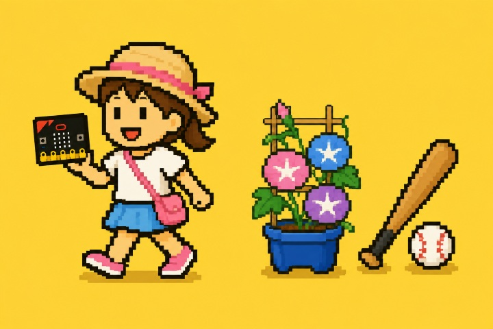
【7月】micro:bitで楽しむ！夏休み自由研究＆夏イベントとくしゅう
【7月】micro:bitで楽しむ！夏休み自由研究＆夏イベント特集
（小学3年生〜中学生）
夏休みの自由研究やイベントに使えるmicro:bitプログラム集です。 夏休みの自由研究やイベントに使えるmicro:bitプログラム集です。
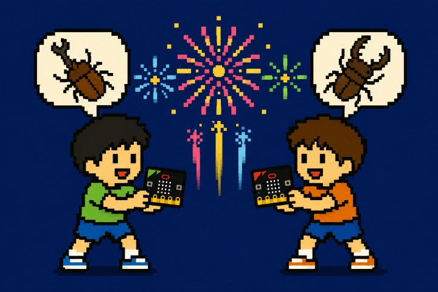
【6月】日ざしに注意！運動会・プールの安全サポートmicro:bit
【6月】日差しに注意！運動会・プールの安全サポートmicro:bit
（小学3年生〜中学生）
運動会やプールじゅぎょうで使えるmicro:bitプログラム集です。 運動会やプール授業で使えるmicro:bitプログラム集です。
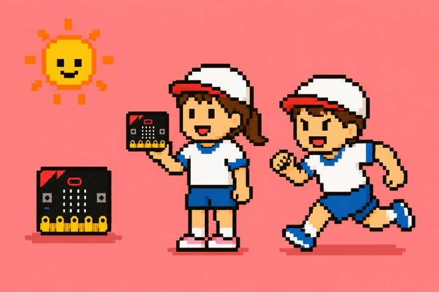
【5月】新しい学年になれてきた？頭も体も動かそう！
【5月】新しい学年に慣れてきた？頭も体も動かそう！
（小学3年生〜中学生）
頭と体のエクササイズができるmicro:bitプログラム集です。 頭と体のエクササイズができるmicro:bitプログラム集です。
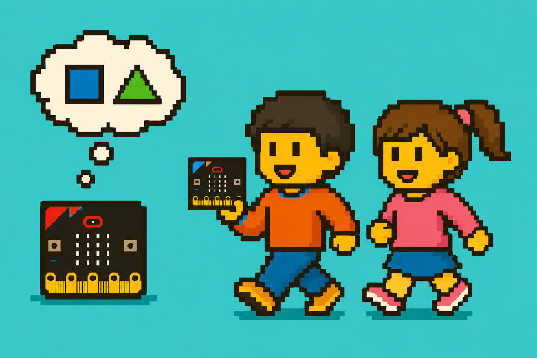
【4月】新年度が始まったよ！いろいろなことにチャレンジしてみよう！
【4月】新年度が始まったよ！色々なことにチャレンジしてみよう！
（小学3年生〜中学生）
新年度の学校生活に生かせる、micro:bitのプログラム集です。 新年度の学校生活に生かせる、micro:bitのプログラム集です。
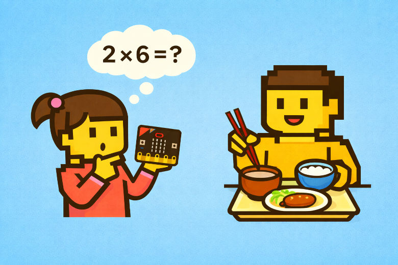
【3月】じゅぎょうがかわる！作ってすぐにためせるmicro:bitのチカラ
【3月】授業が変わる！作ってすぐに試せるmicro:bitのチカラ
（小学3年生〜中学生）
じゅぎょうで使えるいろいろなmicro:bitのプログラム集です。 授業で使える色々なmicro:bitのプログラム集です。
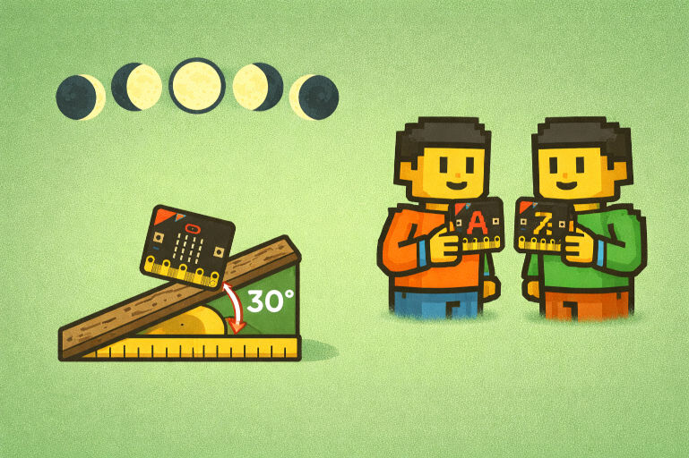
【2月】雪と豆！かそくどセンサーで遊ぼう！
【2月】雪と豆！加速度センサーで遊ぼう！
（小学3年生〜中学生）
豆まきや雪をテーマにしたゲームなどのプログラム集です。 豆まきや雪をテーマにしたゲームなどのプログラム集です。
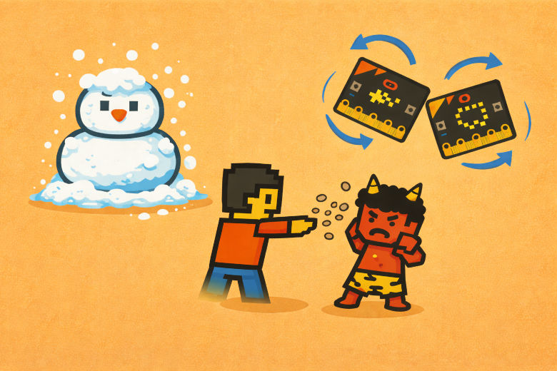
【1月】新年！今年もより安全に楽しもう！
【1月】新年！今年もより安全に楽しもう！
（小学3年生〜中学生）
夜道の明るさがわかるLEDグラフや、お正月にちなんだゲームなどのプログラム集です。 夜道の明るさがわかるLEDグラフや、お正月にちなんだゲームなどのプログラム集です。
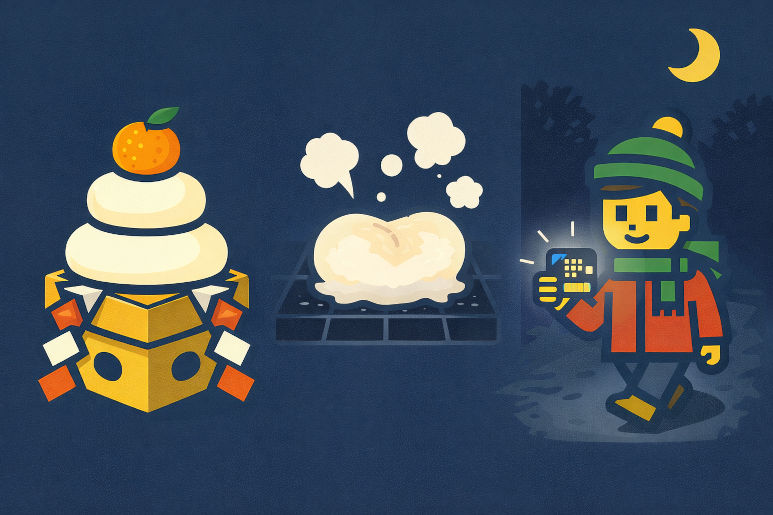
【12月】冬休み直前！気温やほういをしらべて歩こう！
【12月】冬休み直前！気温や方位を調べて歩こう！
（小学3年生〜中学生）
ほういコンパスや気温センサーなどのプログラム集です。 方位コンパスや気温センサーなどのプログラム集です。
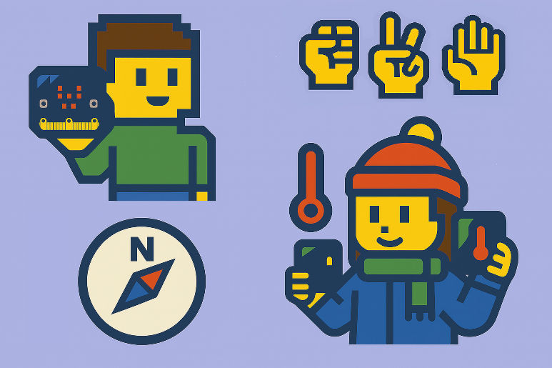
【11月】げいじゅつの秋だよ、光とリズムを楽しもう！
【11月】芸術の秋だよ、光とリズムを楽しもう！
（小学3年生〜中学生）
光とリズムであそぶゲームやライトなどのプログラム集です。 光とリズムで遊ぶゲームやライトなどのプログラム集です。
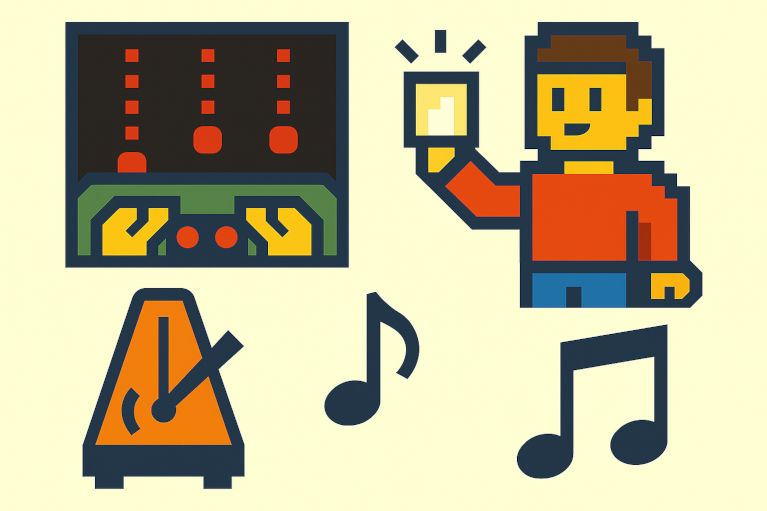
【10月】ぶんかさいで遊べる！かんたんゲームプログラミング
【10月】文化祭で遊べる！かんたんゲームプログラミング
（小学3年生〜中学生）
micro:bitを使って遊べる、かんたんなゲームプログラム集です。 micro:bitを使って遊べる、簡単なゲームプログラム集です。
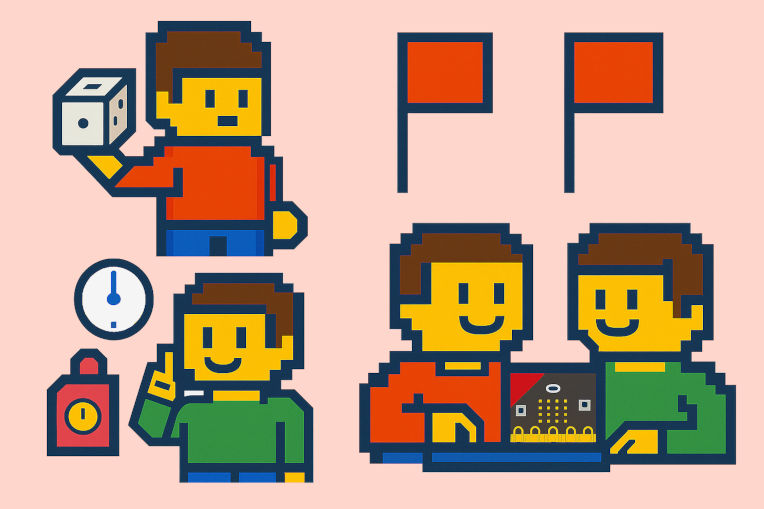
【9月】けんこうしゅうかんをつくる ICT 活用
【9月】健康習慣をつくる ICT 活用
（小学3年生〜中学生）
「けんこう × ICT」をテーマにしたプログラム集です。 「健康 × ICT」をテーマにしたプログラム集です。
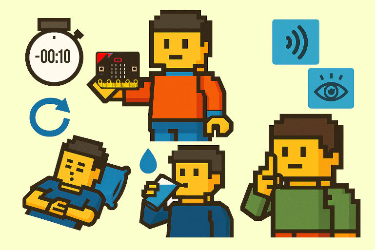